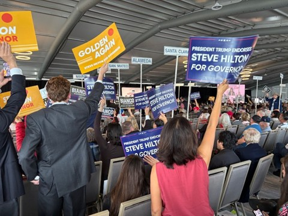
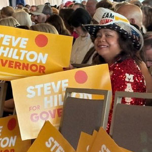
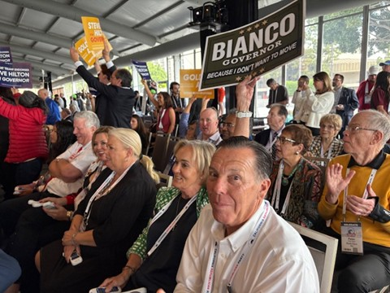
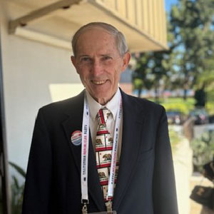
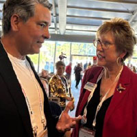
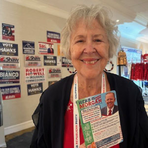
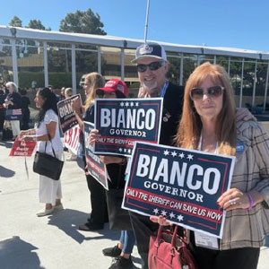
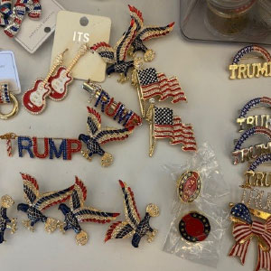
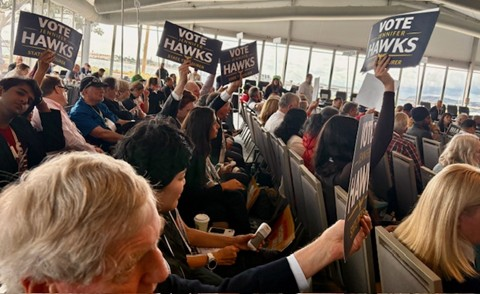
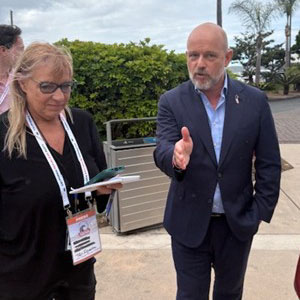

Californians gathered in San Diego for the CAGOP convention, where they rallied behind Republican candidates and built momentum ahead of the 2026 election. Grassroots volunteers, local leaders, and longtime members came together to share ideas and strengthen the party’s direction in a competitive statewide environment.








